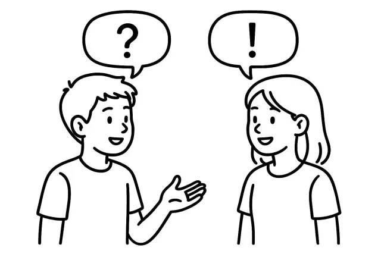

EIN WORT SATZ
Dieses Spiel ist relativ einfach und funktioniert wie Folgt:
1. Ihr müsst minimum zwei Personen sein
2. Nun müsst ihr zu einem gegebenen Thema wie z.B. "Strand" oder "Raketen" Sätze bilden.
3. Aber hier liegt der Haken, denn jeder von euch darf nur ein Wort sagen, um bei der Bildung des Satzes zu helfen,
bis er wieder dran ist.
4. Um nun noch etwas Schwierigkeit hinein zu bringen, könnt ihr euch auf ein gemeinsames Wort einigen, welches nicht gesagt werden darf (Tabuu-Wörter).
Wenn es nun doch von einer Person gesagt wird, ist diese draussen.
5. Ihr könnt jederzeit weitere "Tabuu-Wörter" hinzufügen.
6. Viel Spass beim spielen und schreibt uns auf Insta gerne was für lustige Sätze ihr kreiert habt!